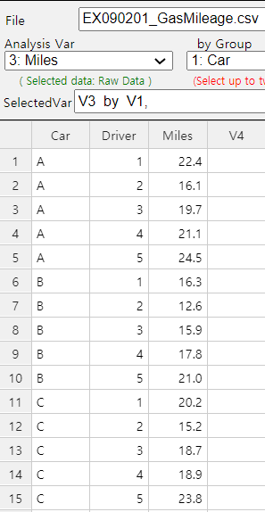
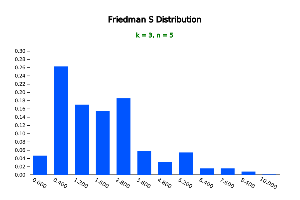
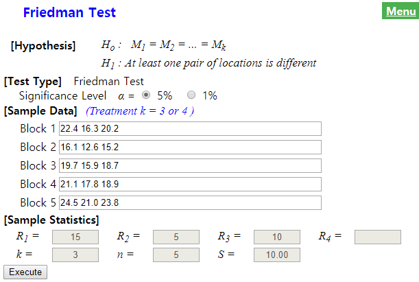
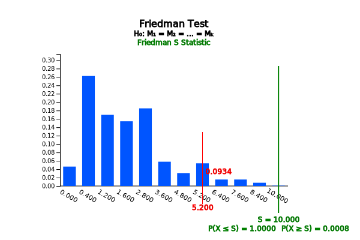

Let us take a look at the Friedman test using [Example 9.2.1] which was the car fuel mileage measurement problem.
Chapter 10. Nonparametric Testing Hypothesis
10.3.2 Randomized block design: Friedman Test
[presentation] [video]
In Section 9.2, we studied the randomized block design to measure the fuel mileage of three types of cars
which reduce the impact of the block factor, i.e., driver. If each population follows a normal distribution,
sample data are analyzed using the F-test based on the two-way analysis of variance without the interaction.
However, the assumption that a population follows a normal distribution may not be appropriate for real-world
data, or that there may not be enough data to assume a normal distribution. Alternatively, if the data collected
might not be continuous and are ordinal such as ranks, then the parametric test is not appropriate. In such
cases, nonparametric tests are used to test parameters by converting data to ranks without assuming the
distribution of the population. This section introduces the Friedman test corresponding to the randomized block
design experiments in Section 9.2.2.
Example 10.3.2
The fuel mileage of the three types of cars (A, B and C) is measured using the randomized block design as
Table 9.2.4 and it is rearranged in Table 10.3.7.
Table 10.3.7 Fuel mileage of the three types of cars
| Block | Car A | Car B | Car C |
|---|---|---|---|
| Driver 1 | 22.4 | 16.3 | 20.2 |
| Driver 2 | 16.1 | 12.6 | 15.2 |
| Driver 3 | 19.7 | 15.9 | 18.7 |
| Driver 4 | 21.1 | 17.8 | 18.9 |
| Driver 5 | 24.5 | 21.0 | 23.8 |
[Ex] ⇨ eBook ⇨ EX090201_GasMileage.csv
1) Draw a histogram of the data to see if the fuel mileage of the three cars can be tested by a parametric method.
2) Using the Friedman test which is a nonparametric method of the randomized block design, test whether
the fuel mileage of the three types of cars are different with the significance level of 5%.
3) Check the result of the above Friedman test using『eStatU』.
Answer
1) Enter data in『eStat』as shown in <Figure 10.3.8>.
|

<Figure 10.3.8> 『eStat』Data input
|
Click icon of the analysis of variance. Select ‘Miles’ as 'Analysis Var' and ‘Car’ as ‘by Group’.
Then the dot graph by car type and the 95% confidence interval for the population mean will appear.
Again, clicking the [Histogram] button in the options window below the graph will show the histogram and
normal distribution curve for each car type as shown in <Figure 10.3.9>.

<Figure 10.3.9> Histogram of fuel mileage by car
Looking at the histogram, it is not sufficient to assume that each population follows a normal
distribution, because of the small number of data. In such case, applying the parametric \(F\)-test
may lead to errors.
The hypothesis for this problem is to test whether or not the location parameters \(\small M_1 , M_2 , M_3 \) of the three populations are the same.
\(\small \quad H_0 : M_1 = M_2 = M3 \)
\(\small \quad H_1 : \) At least one pair of location parameters is not equal.
The Friedman test calculates the sum of ranks, \(\small R_1 , R_2 , R_3 \) for each of the three types of cars after the ranking is calculated for the fuel mileage measured for each driver (block) (Table 10.3.8). If there is a tie, then the average of ranks is assigned.
Table 10.3.8 Ranking in each of the block
| Block | Car A | Car B | Car C |
|---|---|---|---|
| Driver 1 | 3 | 1 | 2 |
| Driver 2 | 3 | 1 | 2 |
| Driver 3 | 3 | 1 | 2 |
| Driver 4 | 3 | 1 | 2 |
| Driver 5 | 3 | 1 | 2 |
| Sum of ranks | \(\small R_1 = 15\) | \(\small R_2 = 5\) | \(\small R_3 = 10\) |
The sum of ranks for Car A is \(\small R_1\) = 15, for Car B is \(\small R_2\) = 5, for Car C is \(\small R_3\) = 10.
The sum of ranks looks different. Are the differences statistically significant?
The Friedman test statistic \(\small S\) can be considered as the \(\small F\) statistic in the two-way analysis of variance to these ranking data as follows:
\(\small \quad S = \frac{12}{nk(k+1)} \sum_{j=1}^{k} {R_j ^2 } - 3n(k+1) \)
where \(k\) is the number of population. In this example, \(k\) = 3 and the \(\small S\) statistic is as follows:
\(\small \quad S = \frac{12}{5 \times 3(3+1)} (15^2 + 5^2 + 10^2 ) - 3 \times 5(3+1) = 10 \)
The distribution of the test statistic \(\small S\), when the null hypothesis is true, should be known to investigate how large a value of \(\small S\) is statistically significant. Since the number of cases of ranking when \(n\) = 5, \(k\) = 3 is \((3!)^5 = 7776\), it is not easy to examine all of these possible rankings to obtain a distribution. 『eStatU』 provides the distribution of the test statistic \(\small S\) in the case of \(n\) = 5, \(k\) = 3 as in <Figure 10.3.10> and its distribution table as Table 10.3.9. As shown in the graph, the distribution of \(n\) = 5, \(k\) = 3 is an asymmetrical distribution.
|

<Figure 10.3.10> Friedman S distribution when ,
|
Table 10.3.9 Friedman S distribution when \(k = 3, n = 5\)
| Friedman S distribution | \(k = 3\) | \(n = 5\) | |
|---|---|---|---|
| \(x\) | \(P(X = x)\) | \(P(X \le x)\) | \(P(X \ge x)\) |
| 0.000 | 0.0463 | 0.0463 | 1.0000 |
| 0.400 | 0.2623 | 0.3086 | 0.9537 |
| 1.200 | 0.1698 | 0.4784 | 0.6914 |
| 1.600 | 0.1543 | 0.6327 | 0.5216 |
| 2.800 | 0.1852 | 0.8179 | 0.3673 |
| 3.600 | 0.0579 | 0.8758 | 0.1821 |
| 4.800 | 0.0309 | 0.9066 | 0.1242 |
| 5.200 | 0.0540 | 0.9606 | 0.0934 |
| 6.400 | 0.0154 | 0.9761 | 0.0394 |
| 7.600 | 0.0154 | 0.9915 | 0.0239 |
| 8.400 | 0.0077 | 0.9992 | 0.0085 |
| 10.000 | 0.0008 | 1.0000 | 0.0008 |
The Friedman test is a right sided test. If we look for the five percentile from the right corresponding
to significance level, the nearest value is \(\small P(X \ge 6.4)\) = 0.0394. Since it is a discrete distribution,
there is no exact value of five percentile. Hence, the rejection region with the significance level of 5%
can be written as follows:
‘If \(\small S \ge 6.4\), then reject \(\small H_0\)’
Since \(\small S\) = 10 in this example, \(\small H_0\) is rejected.
3) Enter data in『eStatU』as in <Figure 10.3.11> and click the [Execute] button. The sample
statistics and test graph will be shown as in <Figure 10.3.12>. The critical line which contains
5% of the significance level is shown here. For a discrete distribution, the choice of the final
rejection region should be determined by the analyst.
|

<Figure 10.3.11> Data input for Friedman test at『eStatU』
|

<Figure 10.3.12> Result of Friedman test using『eStatU』
Let's generalize the Friedman test described so far using the above example. Assume that there are \(k\) number
of levels and denote the rank of \(n\) number of data as follows:
Table 10.3.10 Notation of n random samples for k number of levels with randomized block design
| Lebel 1 | Lebel 2 | \(\cdots\) | Lebel \(k\) | ||
|---|---|---|---|---|---|
| Block 1 | \(X_{11}\) | \(X_{21}\) | \(\cdots\) | \(X_{k1}\) | |
| Block 2 | \(X_{12}\) | \(X_{22}\) | \(\cdots\) | \(X_{k2}\) | |
| \(\cdots\) | \(\cdots\) | \(\cdots\) | \(\cdots\) | \(\cdots\) | |
| Block k | \(X_{1n}\) | \(X_{2n}\) | \(\cdots\) | \(X_{kn}\) | |
| Mean | Mean \({\overline X}_{1\cdot}\) | Mean \({\overline X}_{2\cdot}\) | \(\cdots\) | Mean \({\overline X}_{k\cdot}\) | Total Mean \({\overline X}_{\cdot \cdot}\) |
A statistical model of the Friedman test is as follows:
$$
X_{ij} = \mu + \tau_{i} + \beta_{j} + \epsilon_{ij}, \quad i=1,2,...,k; \;\; j=1,2,...,n
$$
Here \(\tau_i\) is the effect of level \(i\) which satisfies \(\sum_{i=1}^{k} \tau_{i} = 0\) and
\(\beta_{j}\) is the effect of block \(j\) which satisfies \(\sum_{j=1}^{n} \beta_{j} = 0\).
\(\epsilon_{ij}\) ’s are independent and follows the same continuous distribution.
The hypothesis of the Friedman test is as follows: $$ \begin{align} H_0 &: \tau_1 = \tau_2 = \cdots = \tau_k \\ H_1 &: \text{At least one pair of } \tau_i \text{ is not equal.} \end{align} $$ For the Friedman test, ranking data for each block must be created. Table 10.3.11 is the notation of ranking data for each level.
Table 10.3.11 Notation of rank data in each level
| Lebel 1 | Lebel 2 | \(\cdots\) | Lebel \(k\) | ||
|---|---|---|---|---|---|
| Block 1 | \(R_{11}\) | \(R_{21}\) | \(\cdots\) | \(R_{k1}\) | |
| Block 2 | \(R_{12}\) | \(R_{22}\) | \(\cdots\) | \(R_{k2}\) | |
| \(\cdots\) | \(\cdots\) | \(\cdots\) | \(\cdots\) | \(\cdots\) | |
| Block k | \(R_{1n}\) | \(R_{2n}\) | \(\cdots\) | \(R_{kn}\) | |
| Sum of ranks | \({R}_{1\cdot}\) | \({R}_{2\cdot}\) | \(\cdots\) | \({R}_{k\cdot}\) | |
| Mean | \({\overline R}_{1\cdot}\) | \({\overline R}_{2\cdot}\) | \(\cdots\) | \({\overline R}_{k\cdot}\) | Average of Ranks \({\overline R}_{\cdot \cdot} = \frac{k+1}{2}\) |
If we apply the analysis of variance for the rank data of Table 10.3.11 instead of the observation data in
Section 9.2, the total sum of squares, \(SST\), and the block sum of squares \(SSB\) are constants.
The treatment sum of squares \(SSTr\) is as follows:
$$
\begin{align}
SSTr &= \sum_{i=1}^{k} n( {\overline R}_{i \cdot} - {\overline R}_{\cdot \cdot} )^2 \\
SST &= SSTr + SSE
\end{align}
$$
Therefore, the \(F\)-test statistic can be written as follows:
$$
F = \frac{MSTr}{MSE} = c \frac{ {SSTr } } { {SST - SSTr - SSE } }
$$
Here \(c\) is a constant. That is, since \(SST\) is a constant, \(F\)-test statistic is proportional to
\(SSTr\).
The Friedman test statistic \(S\) is proportional to \(SSTr\) as follows: $$ \begin{align} S &= \frac{12}{k(k+1)} SSTr = \frac{12 n}{k(k+1)} \sum_{i=1}^{k} ({\overline R}_{i \cdot} - {\overline R}_{\cdot \cdot} )^2 \\ &= \frac{12}{nk(k+1)} \sum_{i=1}^{k} {R}_{i \cdot} ^2 - 3n(k+1) \end{align} $$
The reason \(S\) statistic has the constant multiplication of \(\frac{12}{k(k+1)}\) is to make \(S\) which follows a chi-square distribution with \(k-1\) degrees of freedom.
The distribution of the Friedman test statistic \(S\) is denoted as \(S(k,n)\).『eStatU』 provides the distribution of \(S(k,n)\) up to \(n \le 8\) if \(k = 3\) and up to \(n \le 6\) if \(k = 4\). \(S(k,n)_{α}\) denotes the right tail 100\(\times α\) percentile, but there might not be the exact percentile, because it is a discrete distribution. In this case, the middle value of two nearest \(S(k,n)_{α}\) is often used approximately. Table 10.3.12 is the summary of decision rule of the Friedman test.
Table 10.3.12 Friedman Test
| Hypothesis | Decision Rule Test Statistic \(S\) |
|---|---|
| \( \; H_0 : {\tau}_1 = {\tau}_2 = \cdots = {\tau}_k \) \(\; H_1 : \text{At least one pair of } {\tau}_i \) is not equal |
If \( S > s(k, n)_{α} \), then reject \( H_0 \) |
☞ If there are tied values on each block, use the average rank.
The distribution of the Friedman statistic \(S\) is independent of the population distribution.
In other words, the Friedman test is a distribution-free test.
If the null hypothesis is true and if the sample is large enough, the test statistic \(S\) is approximated by the chi-square distribution with \(k-1\) degrees of freedom. Table 10.3.13 summarizes the decision rule for the Friedman test in case of large sample.
Table 10.3.13 Friedman Test – large sample case
| Hypothesis | Decision Rule Test Statistic \(S\) |
|---|---|
| \( \; H_0 : {\tau}_1 = {\tau}_2 = \cdots = {\tau}_k \) \(\; H_1 : \text{At least one pair of } {\tau}_i \) is not equal |
If \( S > s(k, n)_{α} \), then reject \( H_0 \) |
If there is a tie in the block, the average rank is assigned to each data. In this case, the statistic
\(S\) shall be modified as follows:
$$
S' = \frac{S}{1 - \sum_{j=1}^{g} \frac{T_j}{np(p^2 -1)} }
$$
Here \(g\) = (number of tied groups), \(T_{j} = \sum_{j=1}^{g} {t}_{j} ({t}_{j}-1)({t}_{j}+1) \)
where \(t_j\) = (the size of the \(j^{th}\) tie group, i.e., the number of observations in the tie group)
If there is no tie, the size of the \(j^{th}\) tie group is 1 and \(t_j\) = 1.
|
Practice 10.3.2
The following is the result of an agronomist's survey of the yield of four varieties of wheat
by using the randomized block design of the three cultivated areas (block). Apply the Friedman test
whether the mean yields of the four wheats are the same or not with the 5% significance level.
Table 10.3.8 Ranking in each of the block
[Ex] ⇨ eBook ⇨ PR100302_WheatAreaYield.csv
|
Multiple Choice Exercise
*** Choose one answer and click [Submit] button
10.8 Which of the following nonparametric tests is for tesing the location parameters of multiple populations?
10.9 Which of the following nonparametric tests is appropriate for testing of the randomized block design method?
10.10 What is the theoretical basis for the statistic used for the Kruskal-Wallis test?